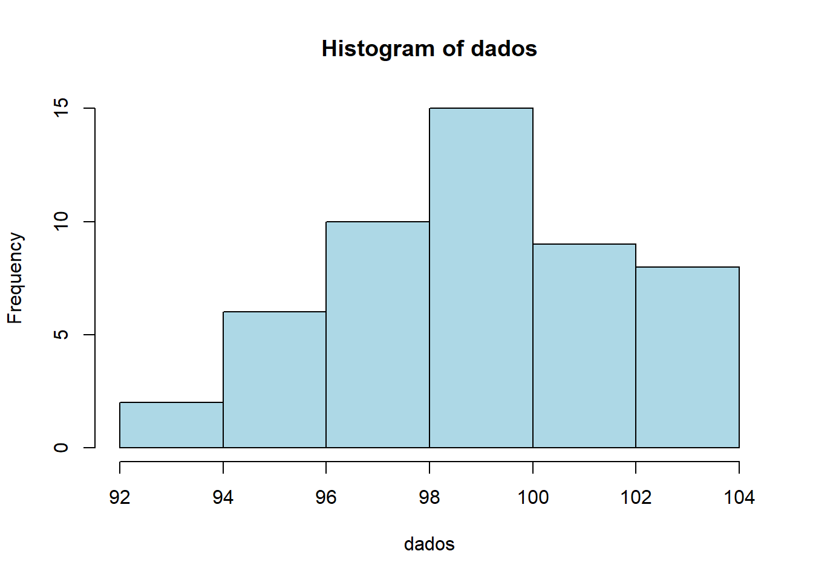
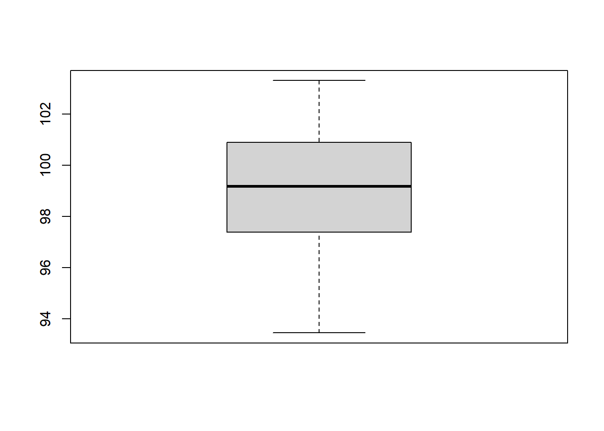

Código
dbinom(3, size=10, prob=0.5)[1] 0.1171875

As distribuições de probabilidade são fundamentais para modelar fenômenos aleatórios. Neste relatório, são analisadas distribuições discretas e contínuas, com aplicações práticas e cálculos analíticos utilizando o R e o pacote leem.
leemDiscretas: Assumem valores que podem ser contados um a um (finitos ou infinitos enumeráveis). Geralmente resultam de processos de contagem e assumem números inteiros.
Contínuas: Assumem qualquer valor dentro de um intervalo ou série de intervalos nos números reais. Geralmente resultam de processos de medição.
Modelo de sucessos em experimentos repetidos.
dbinom(3, size=10, prob=0.5)[1] 0.1171875Eventos raros em intervalo fixo.
dpois(2, lambda=3)[1] 0.2240418# Número de falhas por hora em rede.
dpois(5, lambda=4)[1] 0.1562935Distribuição simétrica em forma de sino.
pnorm(100, mean=90, sd=10)[1] 0.8413447# Tempo de resposta de um sistema.
pnorm(110, mean=100, sd=15)[1] 0.7475075library(leem)
set.seed(10)
# 1. Gera os dados normais
dados <- rnorm(50, 100, 3)
# 2. Converte os dados para a classe exigida pelo pacote leem
dados_leem <- new_leem(dados, variable = 2)
# 3. Cria a tabela de frequências usando o objeto convertido
tab <- tabfreq(dados_leem)
# 4. Exibe o resultado
tab
Tabela de frequência
Tipo de variável: continuous
Classes Fi PM Fr Fac1 Fac2 Fp Fac1p Fac2p
1 92.62 |--- 94.26 2 93.44 0.04 2 50 4 4 100
2 94.26 |--- 95.9 6 95.08 0.12 8 48 12 16 96
3 95.9 |--- 97.54 6 96.72 0.12 14 42 12 28 84
4 97.54 |--- 99.18 11 98.36 0.22 25 36 22 50 72
5 99.18 |--- 100.82 12 100.00 0.24 37 25 24 74 50
6 100.82 |--- 102.46 7 101.64 0.14 44 13 14 88 26
7 102.46 |--- 104.1 6 103.28 0.12 50 6 12 100 12
==============================================
Classes: Agrupamento de classes
Fi: Frequência absoluta
PM: Ponto médio
Fr: Frequência relativa
Fac1: Frequência acumulada (abaixo de)
Fac2: Frequência acumulada (acima de)
Fp: Frequência percentual
Fac1p: Frequência acumulada percentual (abaixo de)
Fac2p: Frequência acumulada percentual (acima de) # Ajuste de classes com k
# 1. Transforma os dados brutos em um objeto da classe 'leem'
dados_leem <- new_leem(dados, variable = 2)
# 2. Agora sim, calcula a tabela especificando o número de classes (k = 6)
tab2 <- tabfreq(dados_leem, k = 6)
# 3. Exibe o resultado
tab2
Tabela de frequência
Tipo de variável: continuous
Classes Fi PM Fr Fac1 Fac2 Fp Fac1p Fac2p
1 92.46 |--- 94.43 2 93.445 0.04 2 50 4 4 100
2 94.43 |--- 96.4 8 95.415 0.16 10 48 16 20 96
3 96.4 |--- 98.37 11 97.385 0.22 21 40 22 42 80
4 98.37 |--- 100.34 14 99.355 0.28 35 29 28 70 58
5 100.34 |--- 102.31 9 101.325 0.18 44 15 18 88 30
6 102.31 |--- 104.28 6 103.295 0.12 50 6 12 100 12
==============================================
Classes: Agrupamento de classes
Fi: Frequência absoluta
PM: Ponto médio
Fr: Frequência relativa
Fac1: Frequência acumulada (abaixo de)
Fac2: Frequência acumulada (acima de)
Fp: Frequência percentual
Fac1p: Frequência acumulada percentual (abaixo de)
Fac2p: Frequência acumulada percentual (acima de) 🔹 Discretas
rbinom(50, 10, 0.5) [1] 4 3 4 5 7 7 8 5 6 5 6 7 4 5 6 7 4 6 5 6 3 4 4 5 4 4 6 4 7 8 7 2 6 4 4 4 6 7
[39] 3 5 6 4 3 7 3 6 5 5 3 7rpois(50, 3) [1] 5 1 1 1 2 1 1 2 6 1 4 3 2 2 4 2 4 7 4 3 3 4 4 4 7 3 1 2 3 2 2 1 3 3 3 3 5 4
[39] 4 1 1 1 1 3 4 3 3 2 5 4rnorm(50, 100, 10) [1] 92.38196 104.19375 89.60057 107.11574 93.66787 105.63175 106.60987
[8] 83.41949 110.28168 111.27954 87.19845 111.28868 95.35865 96.84240
[15] 109.24293 100.77145 110.39924 107.41886 112.55545 109.50919 95.18634
[22] 102.02882 99.68260 88.04420 106.23681 90.85196 102.48758 89.37377
[29] 96.36018 87.93005 114.29213 106.33436 80.03184 93.18168 95.39945
[36] 90.16931 104.95332 107.25818 106.67299 109.54786 83.24668 87.94815
[43] 80.36748 114.70752 103.72472 110.65879 105.30650 101.01983 113.37782
[50] 100.87235runif(50, 0, 1) [1] 0.347860110 0.007992606 0.401344915 0.588350693 0.875976234 0.708542599
[7] 0.193594260 0.381765494 0.193059137 0.816977370 0.010142967 0.363609036
[13] 0.728681494 0.398965224 0.874929312 0.135716364 0.115147814 0.196729092
[19] 0.057053349 0.587422258 0.743175432 0.583126856 0.291362570 0.997801941
[25] 0.698835609 0.258798507 0.242150089 0.380862789 0.330363618 0.964242247
[31] 0.249101692 0.580648473 0.831256196 0.204067441 0.071028569 0.751070201
[37] 0.572900657 0.741908232 0.075622579 0.923359973 0.127685571 0.766168663
[43] 0.339200782 0.118930512 0.557223823 0.137367409 0.855887678 0.845550951
[49] 0.284069678 0.810083557hist(dados, col="lightblue")
boxplot(dados)
As distribuições discretas apresentaram valores inteiros e comportamento baseado em contagem, enquanto as contínuas mostraram maior variabilidade.
O pacote leem facilitou a construção de tabelas de frequência, permitindo análise detalhada dos dados.
O estudo das distribuições permitiu compreender diferentes comportamentos de variáveis aleatórias.
A utilização do R e do pacote leem tornou o processo mais eficiente e didático.
Vídeo aulas do professor da disciplina de Estatística e Probabilidade, Ben Dêivide.
Canal: (https://www.youtube.com/ bendeivide/videos?)